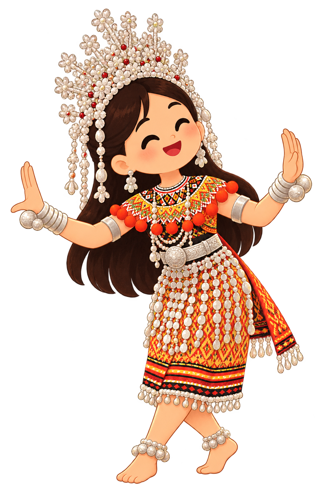

9:41

Terooka Camera
Culture Lens
Photo Guide
Match your pose with the illustration
i
Why This Pose?
Pose 1 of 2
‹
›
Capture a cultural moment to discover the stories behind it.
Discovering cultural details...
Retake
Save to Journey
×
Read Full Story